- Crédits
- Préambule
- Portes logiques
- Fonctions booléennes
- Circuits combinatoires
- Opérations bit à bit en
Python(hors programme de première NSI)
Crédits⚓︎
Ce cours est largement inspiré du chapitre 22 du manuel NSI de la collection Tortue chez Ellipsen auteurs : Ballabonski, Conchon, Filliatre, N’Guyen.
Préambule⚓︎
Les circuits d’un ordinateur manipulent uniquement des 0 ou des 1 représentés en interne par des tensions hautes ou basses. Les premiers ordinateurs construits dans la période 1945-1950 sont basés sur une technologie de tube à vide ou tube électrique. En 1947, aux laboratoires Bell, Shockley, Bardeen et Brattain inventent le transistor au germanium un petit composant électronique qui se comporte comme un interrupteur. Les transistors, plus petits et dissipant moins de chaleur, vont supplanter les tubes électriques : en 1954 le germanium est remplacé par le silicium, en 1955 apparaissent les premiers ordinateurs entièrement transistorisés, en 1960 le transistor à effet de champ permet l’intégration de dizaines composants dans un centimètre carré. Les transistors sont ensuite directement gravés dans une plaque de silicium constituant un cicrcuit intégré. En 1965 Gordon Moore futur directeur d’Intel énonce la loi empirique portant son nom qui fixe une feuille de route à l’industrie des mircroprocesseurs : le doublement de la densité d’intégration des transistors tous les deux ans. Cette loi s’est vérifiée jusqu’à présent avec une finesse de gravure d’environ 5 nanomètres en 2020. Le graphique ci-dessous représente l’évolution du nombre de transistors par circuit intégré.
{kind=link}
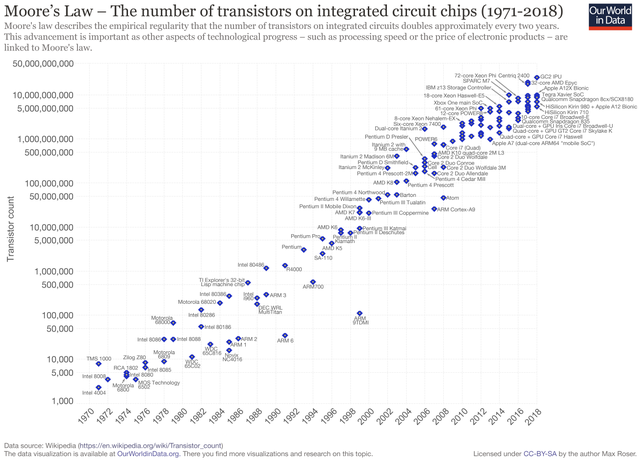
Portes logiques⚓︎
Le transistor porte logique de base⚓︎
Définition 1
Un transistor possède trois broches : la grille, la sortie (ou drain) et la source soumis à des états de tension haute ou basse qu'on peut assimiler aux valeurs binaires 1 et 0 d'un bit. Si la tension appliquée sur la grille est haute (bit à 1) alors le transitor laisse passer le courant entre la source d'énergie et la sortie et cette dernière passe à l'état de tension basse (bit à 0), sinon la sortie reste en tension haute (bit 1).
Une fonction logique prend un ou plusieurs bits en entrée et retourne un ou plusieurs bits en sortie. Une porte logique est un circuit électronique représentant une fonction logique.
Une table logique représente les sorties produites par une fonction logique pour toutes les entrées possibles.
Un transistor représente une fonction logique dont le bit d'entrée est l'état de tension de la grille et le bit de sortie, l'état de tension de la sortie. La table logique (table 1) associée est celle du NON logique ou Inverseur.
Fichier de test Logisim : transistor.circ.
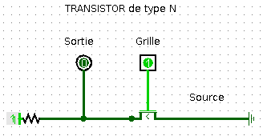
| A | B = NON(A) |
|---|---|
| 0 | 1 |
| 1 | 0 |
Table logique d’une porte NON
Il existe deux conventions de représentation symbolique des portes logiques, une européenne et une américaine.
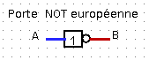
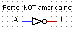
Tutoriel video Logisim : le transistor
D’autres portes logiques⚓︎
Transistors en série ou en parallèle⚓︎
Exercice 1
On donne ci-dessous les représentations de deux portes logiques :
- La porte NAND constituée de deux transistors en série
- La porte NOR constituée de deux transistors en parallèle
Chacune de ces portes logiques comportent deux bits d'entrée : A pour la grille du transistor 1 et B pour la grille du transistor 2 et un bit de sortie.
Compléter leurs tables logiques.
Vérifier avec Logisim et les fichiers porte_NAND.circ et porte_NOR.circ.
Tutoriel video Logisim : porte NAND
Tutoriel video Logisim : porte NOR
| A | B | NAND(A, B) |
|---|---|---|
| 0 | 0 | |
| 0 | 1 | |
| 1 | 0 | |
| 1 | 1 |
| A | B | NOR(A, B) |
|---|---|---|
| 0 | 0 | |
| 0 | 1 | |
| 1 | 0 | |
| 1 | 1 |
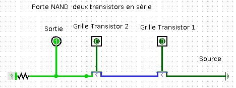
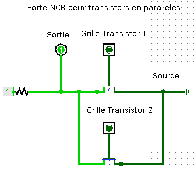
Voici les représentations symboliques des portes logiques NAND et NOR :
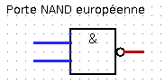
\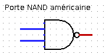
\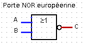
\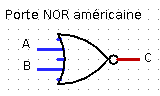
\Portes logiques et fonctions logiques élémentaires⚓︎
Exercice 2
Fichier de test Logisim : exercice2.circ.
-
Compléter la table logique de la porte logique représentée par le circuit ci-dessous. Quelle porte logique peut-on ainsi représenter ?
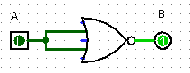
\A B = f(A) 0 1 -
Compléter la table logique de la porte logique représentée par le circuit ci-dessous. Quelle fonction logique correspond à cette porte logique ?
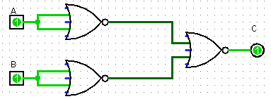
\A B C = g(A, B) 0 0 0 1 1 0 1 1
Exercice 3
Fichier de test Logisim : exercice3.circ.
-
Compléter la table logique de la porte logique représentée par le circuit ci-dessous. Quelle porte logique peut-on ainsi représenter ?
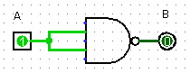
\A B = f(A) 0 1 -
Compléter la table logique de la porte logique représentée par le circuit ci-dessous. Quelle fonction logique correspond à cette porte logique ?
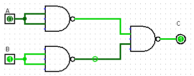
\A B C = g(A, B) 0 0 0 1 1 0 1 1
Voici les représentations symboliques des portes logiques AND et
OR :
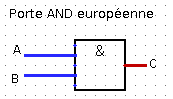
\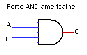
\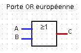
\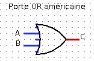
\Exercice 4
- Construire un circuit représentant une porte
ORuniquement avec des portesNOR. - Construire un circuit représentant une porte
ANDuniquement avec des portesNAND.
Ainsi chacune des portes, NAND ou NOR permet de construire les portes NOT, OR, AND. Toute porte logique pouvant s'exprimer à l'aide de ces trois portes, les portes NAND et NOR sont dites universelles.
Fonctions booléennes⚓︎
Fonctions booléennes⚓︎
Définition 2
- Un booléen est un type de données pouvant prendre deux valeurs
True(Vrai) ouFalse(Faux) qu'on représente numériquement par un bit de valeur \(1\) pourTrueou \(0\) pourFalse. Electroniquement, les valeurs 1 et 0 se traduisent respectivement par des tensions haute ou basse. - Une fonction booléenne \(f\) associe un booléen à un ou plusieurs booléens.
- Une fonction booléenne avec \(n\) arguments est définie sur un ensemble \(\{0;1\}^n\) à \(2^n\) valeurs et prend ses valeurs dans \(\{0;1\}\) qui a \(2\) éléments. On peut recenser les \(2^n\) évaluations d'une fonction booléenne à \(n\) arguments dans une table de vérité qui la définit entièrement. Il existe \(2^{2^n}\) fonctions booléennes à \(n\) arguments.
- Une porte logique est la représentation sous forme de circuit d'une fonction booléenne et sa table logique est la table de vérité de cette fonction.
Exercice 5
-
Compléter la fonction
Pythonci-dessous pour qu'elle affiche la table de vérité d'une fonction booléenne à deux entrées. Expliquer le rôle de la fonctionint.def table_verite_2bits(fonction): print('|{:^10}|{:^10}|{:^15}|'.format('a','b',fonction.__name__+'(a,b)')) for a in .............: for b in .............: print('|{:^10}|{:^10}|{:^15}|'.format(......, ......, int(fonction(bool(a),bool(b))))) -
Vérifier que les tables de vérité affichées pour les fonctions
bool.__or__,bool.__and__etbool.__not__sont correctes.In [4]: table_verite_2bits(bool.__or__) | a | b | __or__(a,b) | | 1 | 1 | 1 | | 1 | 0 | 1 | | 0 | 1 | 1 | | 0 | 0 | 0 |
Propriété 1
On peut exprimer toute fonction booléenne à l'aide de trois fonctions booléennes élémentaires :
- La négation de \(x\) est une fonction à 1 bit d'entrée (unaire) notée \(\neg x\) ou \(\overline{x}\).
Sixest un booléen, sa négation estnot xenPython.
| \(x\) | \(\neg x\) |
|---|---|
| 0 | |
| 1 |
- La conjonction de \(x\) et \(y\) est une fonction à 2 bits d'entrée (binaire) notée \(x \wedge y\) ou \(x . y\).
Sixetysont des booléens, leur conjonction estx and yenPython.
| \(x\) | \(y\) | \(x \wedge y\) |
|---|---|---|
| 0 | 0 | |
| 0 | 1 | |
| 1 | 0 | |
| 1 | 1 |
- La disconjonction de \(x\) et \(y\) est une fonction à 2 bits d'entrée (binaire) notée \(x \vee y\) ou \(x + y\).
Sixetysont des booléens, leur disjonction estx or yenPython.
| \(x\) | \(y\) | \(x \vee y\) |
|---|---|---|
| 0 | 0 | |
| 0 | 1 | |
| 1 | 0 | |
| 1 | 1 |
Propriété 2
-
Les fonctions booléennes élémentaires respectent un certain nombre de règles qui permettent de simplifier les expressions booléennes complexes :
-
opérateur involutif : \(\neg(\neg x) = x\) et \(\overline{\overline{x}}=x\)
- élément neutre : \(1 \wedge x = x\) et \(1 . x =x\) ou \(0 \vee x = x\) et \(0 + x =x\)
- élément absorbant : \(0 \wedge x = 0\) et \(0 . x =0\) ou \(1 \vee x = x\) et \(1 + x =1\)
- idempotence : \(x \wedge x = x\) et \(x . x =x\) ou \(x \vee x = x\) et \(x + x =x\)
- complément : \(x \wedge (\neg x) = 0\) et \(x . (\overline{x}) =0\) ou \(x \vee (\neg x) = 1\) et \(x + \overline{x} =1\)
- commutativité : \(x \wedge y = y \wedge x\) et \(x . y = y . x\) ou \(x \vee y = y \vee x\) et \(x + y = y + x\)
- associativité : \(x \wedge ( y \wedge z) = (x \wedge y) \wedge z\) et \(x . (y . z) = (x . y) . z\) ou \(x \vee ( y \vee z) = (x \vee y) \vee z\) et \(x + (y + z) = (x + y) + z\)
- distributivité : \(x \wedge ( y \vee z) = (x \wedge y) \vee (x \wedge z)\) et \(x . (y + z) = x . y + x . z\) ou \(x \vee ( y \wedge z) = (x \vee y) \wedge (x \vee z)\) et \(x + (y . z) = (x + y) . (x + z)\)
-
loi de Morgan : \(\neg(x \wedge y) = \neg x \vee \neg y\) et \(\overline{x . y} = \overline{x} + \overline{y}\) ou \(\neg(x \vee y) = \neg x \wedge \neg y\) et \(\overline{x + y} = \overline{x} . \overline{y}\)
-
Les fonctions booléennes élémentaire respectent des règles de priorité : la négation est prioritaire sur la conjonction qui est prioritaire sur la disjonction.
Il est recommandé de mettre des parenthèses plutôt que d'appliquer les règles de priorité dans l'écriture des expressions booléennes.
QCM types E3C⚓︎
Exercice 6
-
Parmi les quatre expressions suivantes, laquelle s'évalue en True ?
-
Réponse A :
False and (True and False) -
Réponse B :
False or (True and False) -
Réponse B :
True and (True and False) -
Réponse C :
True or (True and False)
-
-
Sachant que l'expression
not(a or b)a la valeurTrue, quelles peuvent être les valeurs des variables booléennes a et b ?- Réponse A :
TrueetTrue - Réponse B :
FalseetTrue - Réponse C :
TrueetFalse - Réponse D :
FalseetFalse
- Réponse A :
-
Pour quelles valeurs booléennes des variables
a, betcl'expression(a or b) and (not c)a-t-elle pour valeurTrue- Réponse A :
a = True b = False c = True - Réponse B :
a = True b = False c = False - Réponse C :
a = False b = False c = True - Réponse D :
a = False b = True c = True
- Réponse A :
-
Si A et B sont des variables booléennes, laquelle de ces expressions booléennes est équivalente
à(not A) or B?- Réponse A :
(A and B) or (not A and B) - Réponse B :
(A and B) or (not A and B) or (not A and not B) - Réponse C :
(not A and B) or (not A and not B) - Réponse D :
(A and B) or (not A and not B)
- Réponse A :
-
Choisir une expression booléenne pour la variable S qui satisfait la table de vérité suivante.
- Réponse A : A ou (non B)
- Réponse B : (non A) ou B
- Réponse C : (non A) ou (non B)
- Réponse D : non (A ou B)
A B S 0 0 1 0 1 0 1 0 1 1 1 1 -
On considère une formule booléenne form des variables booléennes
aetbdont voici la table de vérité. Quelle est cette formule booléenne ?- Réponse A :
a and b - Réponse B :
a or b - Réponse C :
a and not(b) - Réponse D :
not(a) or b
A B form True True False False True False True False True False False False - Réponse A :
Pour aller plus loin (hors programme de première NSI)⚓︎
Dresser la table de vérité d’une fonction booléenne⚓︎
Exercice 7
Démontrer dans chaque cas l'égalité des expressions booléennes en utilisant les deux méthodes suivantes :
-
Méthode 1 : en comparant les tables de vérité des deux expressions booléennes ;
-
Méthode 2 : en utilisant les règles de simplification de la propriété 2.
-
\(x + x . y = x\)
- \(x + \overline{x} . y= x + y\)
- \(x . z + \overline{x} . y + y . z = x . z + \overline{x} . y\)
- \(\overline{y . (x + \overline{y})} = \overline{x} + \overline{y}\)
- \(x . ( \overline{x} + \overline{y}) . (x + y) = x . \overline{y}\)
Exprimer une fonction booléenne à partir de sa table de vérité⚓︎
Exercice 8
On considère la fonction booléenne dont la table de vérité est :
| \(x\) | \(y\) | \(f(x, y)\) |
|---|---|---|
| 0 | 0 | 0 |
| 0 | 1 | 1 |
| 1 | 0 | 1 |
| 1 | 1 | 0 |
- Exprimer chacune des lignes où la fonction prend la valeur \(1\) comme la conjonction des entrées en remplaçant chaque \(1\) par la variable qu'il représente et chaque \(0\) par la négation de la variable. Par exemple le \(1\) de la deuxième ligne s'écrira \(\overline{x} . y\).
- On peut alors écrire \(f(x,y)\) comme la disjonction des formes conjonctives obtenues à la question précédente. En déduire une expression booléenne de \(f(x, y)\).
- Ouvrir le logiciel Logisim et construire une porte logique représentant cette fonction booléenne.
- Cette fonction s'appelle
OU EXCLUSIFouXOR. Ce nom vous paraît-il bien choisi ?
Voici les représentations symboliques de la porte logique XOR :


Circuits combinatoires⚓︎
Définition⚓︎
Définition 3
Un circuit logique combinatoire permet de réaliser une ou plusieurs fonctions booléennes : ses sorties ne dépendent que de l'état actuel de ses entrées. Les portes logiques NOT, NOR, NAND, AND, OR et XOR sont des circuits combinatoires.
Il existe d'autres circuits, dits séquentiels, dont les sorties se calculent non seulement à partir de leurs valeurs d’entrée actuelles mais aussi à partir de leurs états précédents : le facteur temps intervient. Ils utilisent des circuits de mémoire pour mémoriser leurs états antérieurs.
Exercice 9
On considère la fonction booléeenne \(f\) dont la table de vérité est donnée ci-dessous :
| \(x\) | \(y\) | \(f(x, y)\) |
|---|---|---|
| 0 | 0 | 1 |
| 0 | 1 | 0 |
| 1 | 0 | 0 |
| 1 | 1 | 1 |
- En utilisant la méthode exposée dans l'exercice 8, déterminer une expression booléenne de la fonction \(f\).
-
Ouvrir le logiciel Logisim et construire un circuit combinatoire représentant cette fonction booléenne :
-
En utilisant les portes logiques
NOT,NOR,NAND,AND,ORouXOR. - En n'utilisant que des portes logiques
NOT,ANDouOR. - En n'utilisant que des portes logiques
NOR.
Décodeur avec 2 bits d’entrées⚓︎
Exercice 10
On considère un circuit combinatoire qui possède deux entrées \(e_{0}\) et \(e_{1}\) et quatre sorties \(s_{0}\), \(s_{1}\), \(s_{2}\) et \(s_{3}\).
La sortie indexée par le nombre dont le bit de poids faible est \(e_{0}\) et le bit de poids fort \(e_{1}\), est positionnée à \(1\) et les autres sorties à \(0\). Ce circuit est ainsi appelé décodeur \(2\) bits.
-
Compléter la table de vérité de ce circuit combinatoire.
\(e_{0}\) \(e_{1}\) \(s_{0}\) \(s_{1}\) \(s_{2}\) \(s_{3}\) 0 0 0 1 1 0 1 1 -
En utilisant la méthode exposée dans l'exercice 7, déterminer une expression booléenne de chacune des sorties \(s_{0}\), \(s_{1}\), \(s_{2}\) et \(s_{3}\), en fonction des entrées \(e_{0}\) et \(e_{1}\).
-
Ouvrir le logiciel Logisim et construire un circuit combinatoire représentant un décodeur \(2\) bits.
Demi-additionneur et additionneur 1 bit⚓︎
Exercice 11
-
Effectuer les additions binaires : \(0+0\), \(0+1\), \(1+0\) et \(1+1\).
-
Un demi-additionneur binaire 1 bit est un circuit combinatoire qui possède :
- deux entrées : deux bits d'opérande \(e_{0}\) et \(e_{1}\) ;
- deux sorties : un bit de résultat \(s\) et un bit de retenue sortante \(r\).
La sortie \(s\) prend pour valeur le bit des unités et la sortie \(r\) le bit de retenue sortante, lorsqu'on additionne les deux bits d'entrée \(e_{0}\) et \(e_{1}\).
-
Compléter la table de vérité de ce circuit combinatoire :
\(e_{0}\) \(e_{1}\) \(s\) \(r\) 0 0 0 1 1 0 1 1 -
Justifier qu'un demi-additionneur binaire 1 bit peut être représenté par le circuit ci-dessous.
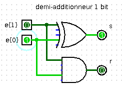
\ -
Ouvrir le logiciel Logisim et construire un circuit combinatoire représentant un demi-additionneur binaire 1 bit.
Exercice 12
Un additionneur binaire 1 bit est un circuit combinatoire qui possède :
- trois entrées : deux bits d'opérande \(e_{0}\) et \(e_{1}\) et un bit de retenue entrante \(r_{0}\)
-
deux bits de sortie : un bit de résultat \(s_{2}\) et un bit de retenue sortante \(r_{3}\).
-
Compléter les colonnes de la table de vérité d'un additionneur binaire 1 bit pour le bit de résultat \(s_{2}\) et le bit retenue sortante \(r_{3}\).
\(e_{0}\) \(e_{1}\) \(r_{0}\) \(s_{1}=\ldots \ldots\) \(r_{1}=\ldots \ldots\) \(s_{2}=\ldots \ldots\) \(r_{2}=\ldots \ldots\) \(r_{3}=\ldots \ldots\) 0 0 0 0 1 0 1 0 0 1 1 0 0 0 1 0 1 1 1 0 1 1 1 1 -
Un additionneur binaire 1 bit peut être réalisé à l'aide de deux demi-additionneurs binaires 1 bit :
-
Le premier demi-additionneur binaire 1 bit prend en entrée les bits d'opérande \(e_{0}\) et \(e_{1}\) et retourne en sortie un bit de résultat intermédiaire \(s_{1}\) et un bit de retenue sortante intermédiaire \(r_{1}\). Donner une expression booléenne de \(s_{1}\) et \(r_{1}\) en fonction de \(e_{0}\) et \(e_{1}\).
-
Le second demi-additionneur binaire 1 bit prend en entrée le bit de résultat \(s_{1}\) et le bit de retenue entrante \(r_{0}\) et retourne en sortie le bit de résultat final \(s_{2}\) et un bit de retenue sortante intermédiaire \(r_{2}\). Donner une expression booléenne de \(s_{2}\) et \(r_{2}\) en fonction de \(s_{1}\) et \(r_{0}\).
-
Enfin, la retenue sortante \(r_{3}\) s'obtient à partir de la retenue sortante \(r_{1}\) du premier demi-additionneur et de la retenue sortante \(r_{2}\) du second. Donner une expression booléenne de \(r_{3}\) en fonction de \(r_{1}\) et \(r_{2}\).
Compléter les colonnes \(s_{1}\), \(r_{1}\) et \(r_{2}\) puis \(s_{2}\) et \(r_{3}\) de la table de vérité de l'additionneur binaire à 1 bit.
-
-
Avec le logiciel Logisim ouvrir le fichier contenant le demi-additionneur de l'exercice précédent.
- Ajouter un nouveau circuit avec
Add a circuit, le nommeradditionneur1bitpuis copier/coller dedans le circuit du demi-additionneur binaire 1 bit. Compléter le circuit pour obtenir un additionneur binaire 1 bit. - Ajouter un nouveau circuit avec
Add a circuit, le nommeradditionneur2bitspuis copier/coller dedans le circuit de l' additionneur binaire 1 bit. Compléter le circuit pour obtenir un additionneur binaire 2 bits.
- Ajouter un nouveau circuit avec
-
Opérations bit à bit en Python (hors programme de première NSI)⚓︎
Propriété 3
Les fonctions booléennes élémentaires (OR, AND, NOT, XOR) existent en Python sous la forme d'opérateurs booléens mais sont également implémentés sous la forme d'opérateurs bit à bit sur les nombres. Un opérateur bit à bit (bitwise en anglais) s'applique sur les bits de même poids des représentations binaires de ses opérandes.
| Opérateur booléen | Opérateur bit à bit | Exemple | Résultat de l'exemple |
|---|---|---|---|
and , ET |
& |
bin(0b101001 & 0b101010) |
'0b101000' |
or , OU |
\| |
bin(0b101001 \| 0b101010) |
'0b101011' |
xor , OU EXCLUSIF |
^ |
bin(0b101001 ^ 0b101010) |
'0b000011' |
not , NEGATION |
~ |
~5 #~x |
renvoie -x - 1 |
Exemples d’utilisation d’opérateurs bit à bit :
- On peut utiliser le
ETbit à bit pour sélectionner uniquement certains bits, par exemple les bits de rang pairs :
>>> bits_pairs = sum(2 ** k for k in range(0, 8, 2))
>>> bin(bits_pairs)
'0b1010101'
>>> bin(183)
'0b10110111'
>>> bin(183 & bits_pairs)
'0b10100010'
- Le
OU EXCLUSIFpeut servir à masquer / démasquer une partie de la représentation binaire d’un nombre (on peut l’employer avec tout objet codé numériquement comme une image ou un caractère).
>>> diego = 69
>>> masque = 42
>>> zorro = diego ^ masque
>>> zorro
111
>>> zorro ^ masque
69
Exercice 13
Dans un réseau IP l'adresse IP d'une machine est constituée d'un préfixe correspondant à l'adresse du réseau (commune à toutes les machines du réseau) et à un suffixe machine, identifiant la machine sur le réseau.
Le préfixe réseau s'obtient à partir de l'adresse IP de la machine en faisant un ET bit à bit avec le masque de sous-réseau.
Par exemple si l'adresse est 192.168.11.12 de représentation binaire 11000000.10101000.00001011.00001011 et le masque de sous-réseau est 255.255.252.0 de représentation binaire
11111111.11111111.11111100.00000000 alors le préfixe réseau est 11000000.10101000.00001000.00000000 soit 192.168.8.0.
On donne ci-dessous deux fonctions outils :
def ip2liste(ip):
"Transforme une adresse IP V4 (type str) en liste d'entiers"
return [int(champ) for champ in ip.split('.')]
def liste2ip(ipliste):
"Transforme une liste d'entiers en adresse IP V4 (type str)"
return '.'.join(str(n) for n in ipliste)
-
Écrire une fonction de signature
prefixe_reseau(ip, masque)qui retourne le préfixe réseau sous forme d'adresse IP V4 (typestr) à partir d'une adresse IP V4 et d'un masque de sous-réseau. -
Écrire une fonction de signature
suffixe_machine(ip, masque)qui retourne le suffixe machine sous forme d'adresse IP V4 (typestr) à partir d'une adresse IP V4 et d'un masque de sous-réseau.
Voici un exemple de résultat attendu :
>>> prefixe_reseau('145.245.11.254','255.255.252.0')
'145.245.8.0'
>>> suffixe_machine('145.245.11.254','255.255.252.0')
'0.0.3.254'
Propriété 4
Python définit également des opérateurs sur les bits d'un nombre, plus efficaces que les opérations mathématiques équivalentes :
-
Le décalage de
nombredenbits vers la gauche multiplienombrepar \(2^{n}\) et s'écritnombre << n. -
Le décalage de
nombredenbits vers la droite divisenombrepar \(2^{n}\) et s'écritnombre >> n.
Exercice 14
Dans l'algorithme de recherche dichotomique, après division en deux de la zone de recherche, l'algorithme s'appelle lui-même sur l'une des deux moitiés. C'est un algorithme de type Diviser pour régner qui peut se programmer récursivement comme nous le verrons en terminale dans le chapitre sur la récursivité.
Si on note n la taille de la liste, une autre implémentation, non récursive, est la suivante :
- on commence la recherche au début de la liste et on avance avec un pas
pas = n // 2oupas = n >> 1jusqu'au premier élément supérieur à l'élément cherché ; - on repart de l'élément précédent le point d'arrêt et on avance désormais avec un pas divisé par 2 soit :
pas = pas >> 1 ;
- on répète en boucle ces instructions jusqu'à ce que le pas atteigne \(1\).
A la fin de de la boucle, on détermine si l'élément précédent le dernier point d'arrêt est l'élément recherché.
Compléter le code de la fonction recherche_dicho2 qui implémente cet algorithme.
def recherche_dicho2(L, e):
x, n = 0, len(L)
pas = n >> 1
while pas >= 1:
while x + pas < n and .................:
x = ..............
pas = ................
return ............